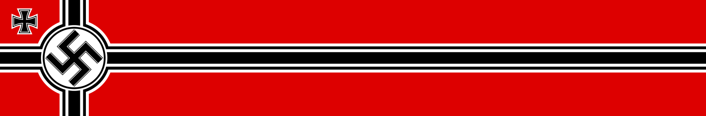

 Kriegsmarine
Acorazados
Cruceros
Tipos de Barcos
Inicio
1) ¿En que año se fundo la Kriegsmarine?
1939
1945
1933
1935
2) ¿Quien dirijiio la Kriegsmarine?
Adolf Hittle
Erich Raeder
Erich Bay
Friedrich Bonte
3) ¿Cual fue la herramienta mas util de la Kriegsmarine?
Portaviones
Cruceros pesados y ligeros
U-boats
Acorazados
4) ¿Que flota superaba a la Kriegsmarine?
Imperio Naval Japones
USS
Royal Navy
Regia Marina
5) ¿Cual de los siguientes barcos hundio la Kriegsmarine?
HMS Hood
RM Zara
USS Enterprise
IJN Aoba
6) ¿En que año fue desmantelada la Kriegsmarine?
1939
1945
1933
1935
7) ¿Que tecnica uso la KMS para que los aliados no identificaran sus barcos?
Cambio de pintura
Cambio de armamento
Cambio de codigos navales
Cambio de nombre
8) ¿Cuantos dias en promedio podian durar los U-boats en misiones?
Menos de 40 dias
Mas de 200 dias
Menos de 170 dias
Mas de 400 dias
9) ¿Que barco fue hundido en el Rio de Plata?
Scharnhorst
Bismarck
Tirpitz
Admiral Graf Spee
10) ¿Cual fue la operacion mas importante del Admiral Hipper?
Operacion Rheinübung
Operacion Safari
Operacion Weserübung
Operacion Cerberus
Enviar respuestas